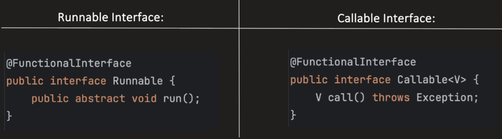
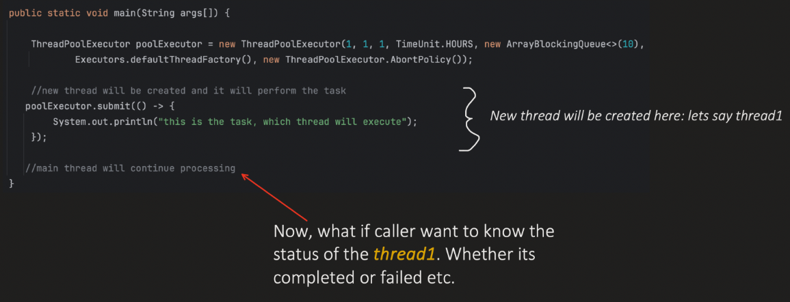

Future & CompletableFuture
execute() vs. submit()
| Feature | execute() | submit() |
|---|---|---|
| Return value | ❌ No | ✅ Future |
| Supports Callable | ❌ No | ✅ Yes |
| Exception handling | ❌ No | ✅ Yes |
| Use case | Fire-and-forget | Result tracking |
Java
// execute()
executor.execute(Runnable task);
// submit()
Future<?> future = executor.submit(Runnable task);
//OR
Future<Integer> future = executor.submit(Callable task);With submit():
Java
Future<?> f = executor.submit(task);- Even if task fails:
- Thread pool doesn’t crash
- Exception hidden until get()
Runnable vs. Callable
Core Difference
- Runnable = No result, no checked exception
- Callable = Returns result + can throw checked exception

| Feature | Runnable | Callable |
|---|---|---|
| Package | java.lang | java.util.concurrent |
| Method | run() | call() |
| Return value | ❌ No | ✅ Yes |
| Checked exception | ❌ No | ✅ Yes |
| Used with Thread | ✅ Yes | ❌ No (needs Executor) |
| Used with Executor | ✅ Yes | ✅ Yes |
| Future support | Limited | Full support |
Runnable can still be used with submit()
Java
Future<?> f = executor.submit(runnable);- f.get() → always null
Callable cannot be used with Thread directly
Java
new Thread(callable); // ❌ Not allowedProblem with traditional ThreadPoolExecutor

submit()returns aFuture<?>, but it is ignored.- The caller (main thread) cannot know:
- whether the task completed successfully
- whether it failed with an exception
- whether it is still running or cancelled
Future
- Future represents the result of an asynchronous computation — basically, a placeholder for a value that will be available later.
- It is used to:
- Execute a task in another thread
- Get the result later (when it's ready)
- Check status (completed / cancelled)
- Step-by-step:
- Submit a task to a thread pool
- Immediately get a Future object
- Task runs in background
- Use future.get() to fetch result (blocks if not ready)
Java
ThreadPoolExecutor executor = new ThreadPoolExecutor(1,1,1,TimeUnit.HOURS,
new ArrayBlockingQueue<>(3),Executors.defaultThreadFactory(),
new ThreadPoolExecutor.AbortPolicy());
Future<Integer> future = executor.submit(() -> {
Thread.sleep(2000);
return 10 + 20;
});
// This will block until result is ready
Integer result = future.get();
System.out.println("Result: " + result);
executor.shutdown();Output:
diagram
Result: 30| Method | Description |
|---|---|
get() | Waits and returns result (blocking) |
get(timeout) | Waits for specific time |
isDone() | Checks if task is complete |
isCancelled() | Checks if cancelled |
cancel() | Attempts to cancel task |
Note:
get() is Blocking
Java
future.get(); // waits until task completes- This can pause your thread → not truly async if misused
Examples of using ThreadPoolExecutor with submit(), Runnable and Callable
Java
public class Practice {
public static void main(String[] args) throws ExecutionException, InterruptedException {
ThreadPoolExecutor executor = new ThreadPoolExecutor(1,1,1,TimeUnit.HOURS,
new ArrayBlockingQueue<>(3),Executors.defaultThreadFactory(),new ThreadPoolExecutor.AbortPolicy());
// Use case 1
Future<?> future1 = executor.submit(() -> {
System.out.println("Task1 with Runnable");
});
Object o = future1.get();
System.out.println(o == null);
// Use case 2
List<Integer> result = new ArrayList<>();
Future<List<Integer>> future2 = executor.submit(() -> {
System.out.println("Task2 with Runnable and return object");
result.add(10);
}, result);
List<Integer> future2Output = future2.get();
System.out.println(future2Output.get(0));
// Use case 3
Future<List<Integer>> future3 = executor.submit(() -> {
System.out.println("Task3 with callable");
List<Integer> output = new ArrayList<>();
output.add(50);
return output;
});
List<Integer> future3Output = future3.get();
System.out.println(future3Output.get(0));
executor.shutdown();
}
}Output:
diagram
Task1 with Runnable
true
Task2 with Runnable and return object
10
Task3 with callable
50Better Alternative → CompletableFuture
- Introduced in Java 8
- Non-blocking
- Supports chaining
- Supports callbacks
- Combine multiple async tasks
How to use CompletableFuture?
CompletableFuture.supplyAsync:
Java
public static <T> CompletableFuture<T> supplyAsync(Supplier<T> supplier)
public static <T> CompletableFuture<T> supplyAsync(
Supplier<T> supplier,
Executor executor
)- supplyAsync method initiates an Async operation.
- supplier is executed asynchronously in a separate thread.
- If we want more control on threads, we can pass an Executor in the method.
- By default, it uses the shared ForkJoinPool executor.
- It dynamically adjusts its pool size based on processors.
Java
public class Practice {
public static void main(String[] args) throws ExecutionException, InterruptedException {
ThreadPoolExecutor executor = new ThreadPoolExecutor(1, 1, 1, TimeUnit.HOURS,
new ArrayBlockingQueue<>(3), Executors.defaultThreadFactory(), new ThreadPoolExecutor.AbortPolicy());
CompletableFuture<String> asyncTask = CompletableFuture.supplyAsync(() -> "Task completed", executor);
System.out.println(asyncTask.get());
executor.shutdown();
}
}Output:
diagram
Task completedthenApply&thenApplyAsync:
- Apply a function to the result of previous Async computation.
- Return a new CompletableFuture object.
Java
CompletableFuture<String> asyncTask1 =
CompletableFuture.supplyAsync(() -> {
// Task which thread need to execute
return "Geeks for ";
}, poolExecutor)
.thenApply((String val) -> {
// functionality which can work on the result of previous async task
return val + "Geeks";
});thenApply method:
- It’s a Synchronous execution.
- Means, it uses the same thread which completed the previous async task.
thenApplyAsync method:
- It’s an Asynchronous execution.
- Means, it uses a different thread (from fork‑join pool, if we do not provide the executor in the method) to complete this function.
- If multiple
thenApplyAsyncis used, ordering cannot be guaranteed —
they will run concurrently.
Java
public class Practice {
public static void main(String[] args) throws ExecutionException, InterruptedException {
ThreadPoolExecutor executor = new ThreadPoolExecutor(1, 1, 1, TimeUnit.HOURS,
new ArrayBlockingQueue<>(3), Executors.defaultThreadFactory(), new ThreadPoolExecutor.AbortPolicy());
CompletableFuture<String> asyncTask = CompletableFuture.supplyAsync(() -> {
System.out.println("Running supplyAsync => " + Thread.currentThread().getName());
return "Hello";
}, executor)
.thenApplyAsync((String val) -> {
System.out.println("Running thenApplyAsync => " + Thread.currentThread().getName());
return val + " world!";
});
System.out.println(asyncTask.get());
executor.shutdown();
}
}Output:
diagram
Running supplyAsync => pool-1-thread-1
Running thenApplyAsync => ForkJoinPool.commonPool-worker-1
Hello world!thenComposeandthenComposeAsync:
- Chain together dependent Async operations.
- Means when next Async operation depends on the result of the previous Async one.
- We can tie them together.
- For async tasks, we can bring some ordering using this.
Java
CompletableFuture<String> asyncTask1 = CompletableFuture
.supplyAsync(() -> {
System.out.println(
"Thread Name which runs 'supplyAsync': "
+ Thread.currentThread().getName()
);
return "Concept and ";
}, poolExecutor)
.thenCompose((String val) -> {
return CompletableFuture.supplyAsync(() -> {
System.out.println(
"Thread Name which runs 'thenCompose': "
+ Thread.currentThread().getName()
);
return val + "Coding";
});
});thenAcceptandthenAcceptAsync:
- Generally end stage in the chain of Async operations.
- It does not return anything.
Java
CompletableFuture<Void> asyncTask1 = CompletableFuture
.supplyAsync(() -> {
System.out.println(
"Thread Name which runs 'supplyAsync': "
+ Thread.currentThread().getName()
);
return "Hello world!";
}, poolExecutor)
.thenAccept((String val) ->
System.out.println("All stages completed")
);thenCombineandthenCombineAsync
- Used to combine the result of 2
CompletableFuture.
Java
public class Practice {
public static void main(String[] args) throws ExecutionException, InterruptedException {
CompletableFuture<Integer> asyncTask1 = CompletableFuture.supplyAsync(() -> 10);
CompletableFuture<String> asyncTask2 = CompletableFuture.supplyAsync(() -> "K");
CompletableFuture<String> combinedTask = asyncTask1.thenCombine(asyncTask2, (Integer i, String s) -> i + s);
System.out.println(combinedTask.get());
}
}Output:
diagram
10K